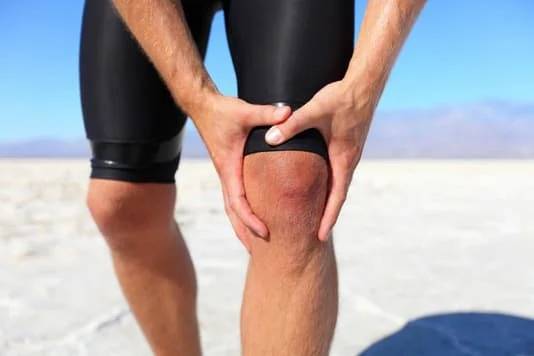

Sports Injuries
Sports injuries can encompass a wide range of conditions, affecting muscles, tendons, ligaments, bones, and joints. The type of injury and its severity often depend on the sport, the level of activity, and the specific circumstances. Here are some common types of sports injuries and general physiotherapy management approaches:
1. Sprains:
- Description: Stretching or tearing of ligaments.
- Physiotherapy Management:
- R.I.C.E. Protocol: Rest, ice, compression, and elevation.
- Progressive Exercise: Gradual introduction of stretching and strengthening exercises.
- Joint Mobilization: Techniques to improve joint mobility.
2. Strains:
- Description: Overstretching or tearing of muscles or tendons.
- Physiotherapy Management:
- R.I.C.E. Protocol: Similar to sprains.
- Stretching and Strengthening: Tailored exercises to promote healing and prevent recurrence.
- Modalities: Heat or cold therapy for pain relief.

3. Tendonitis:
- Description: Inflammation of tendons.
- Physiotherapy Management:
- Rest and Modification of Activities: Reducing activities that exacerbate symptoms.
- Eccentric Exercises: Gradual introduction of eccentric exercises for tendon rehabilitation.
- Ultrasound or Laser Therapy: Some modalities may be used to promote healing.
4. Fractures:
- Description: Breaks in bones.
- Physiotherapy Management:
- Immobilization: In some cases, casting or bracing may be required.
- Gradual Weight-Bearing: Progression from non-weight-bearing to partial and full weight-bearing.
- Strengthening Exercises: Post-immobilization, exercises to rebuild strength.
5. Dislocations:
- Description: Displacement of bones from their normal positions.
- Physiotherapy Management:
- Reduction: In some cases, assisting in the reduction of the dislocation.
- Stabilization Exercises: Strengthening muscles around the joint for stability.
- Functional Rehabilitation: Activities to restore normal function..
6. Concussions:
- Description: Traumatic brain injury.
- Physiotherapy Management:
- Rest and Gradual Return to Activity: Initial rest followed by a gradual return to physical and cognitive activities.
- Vestibular Rehabilitation: Exercises to address balance and dizziness.
- Cervical Spine Management: Addressing neck-related symptoms.
7. Overuse Injuries:
- Description: Result from repetitive stress without sufficient recovery.
- Physiotherapy Management:
- Activity Modification: Adjusting training intensity and frequency.
- Biomechanical Assessment: Identifying and addressing factors contributing to overuse.
- Cross-Training: Incorporating alternative activities to reduce strain.
8. Anterior Cruciate Ligament (ACL) Injury:
- Description: Common knee ligament injury.
- Physiotherapy Management:
- Prehabilitation: Strengthening and preparing muscles before surgery.
- Post-Surgery Rehabilitation: Progressive exercises to regain strength and range of motion.
- Functional Training: Activities to enhance agility and proprioception.
9. Muscle Contusions:
- Description: Bruising or bleeding within the muscle.
- Physiotherapy Management:
- R.I.C.E. Protocol: Initially to manage swelling.
- Gentle Stretching: Gradual introduction of stretching exercises.
- Modalities: Ice and compression for pain relief.
Physiotherapy plays a crucial role in the management of sports injuries, aiming to reduce pain, promote healing, and restore optimal function. Treatment plans are often individualized based on the type and severity of the injury, as well as the athlete's specific needs and goals. Seeking prompt and professional medical attention is essential for accurate diagnosis and timely intervention.